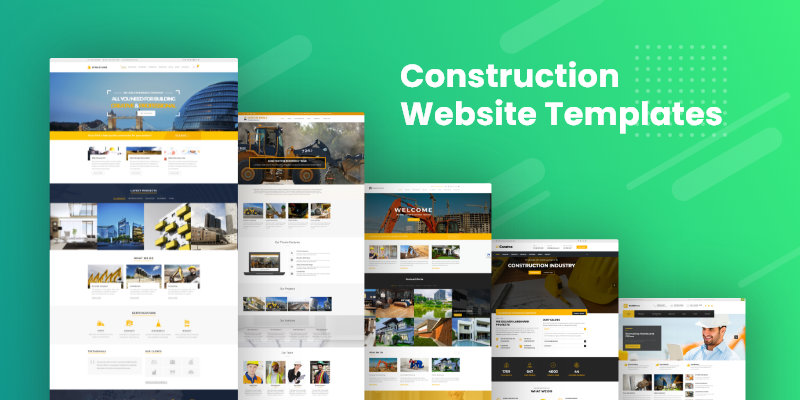
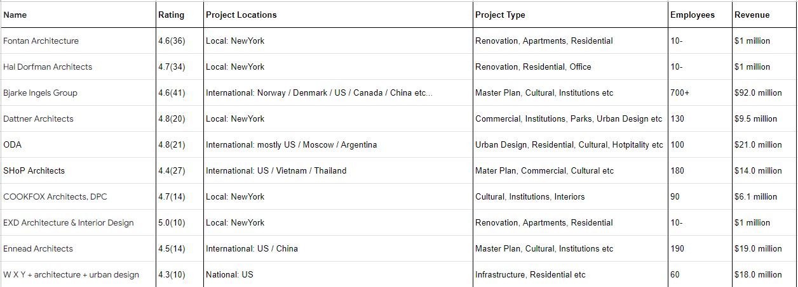
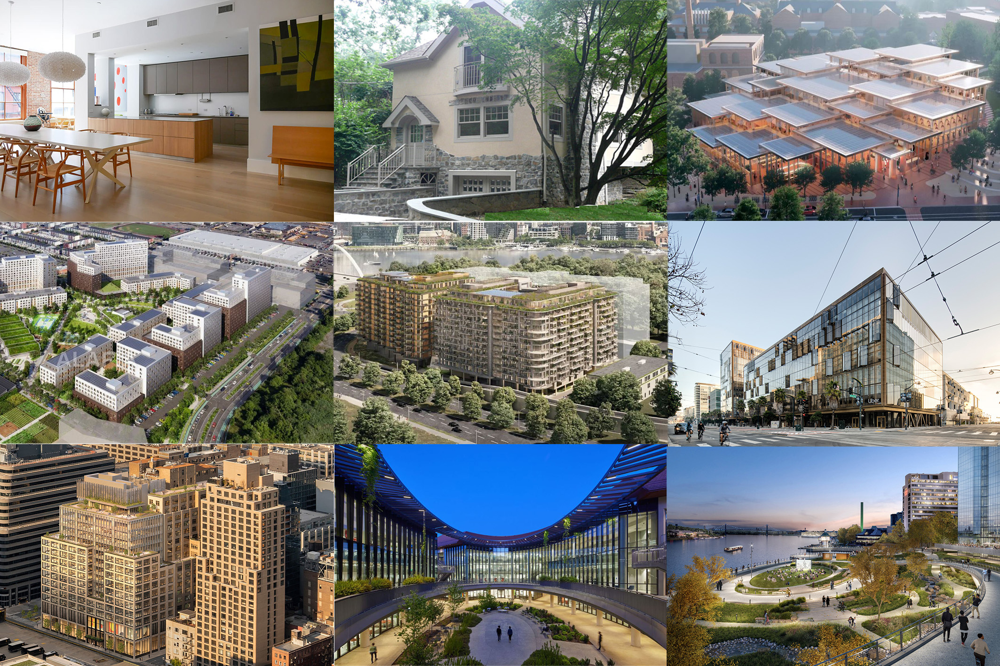
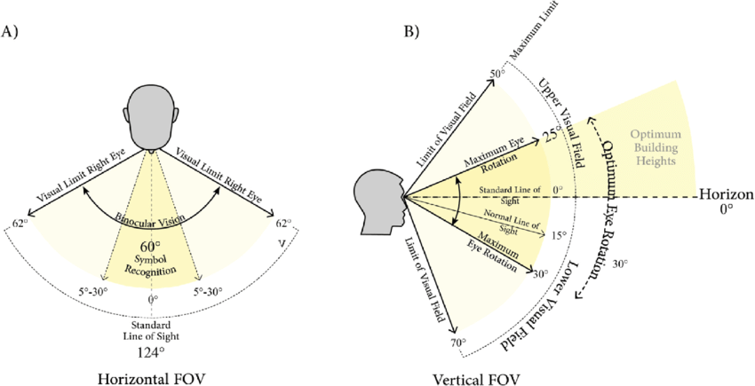
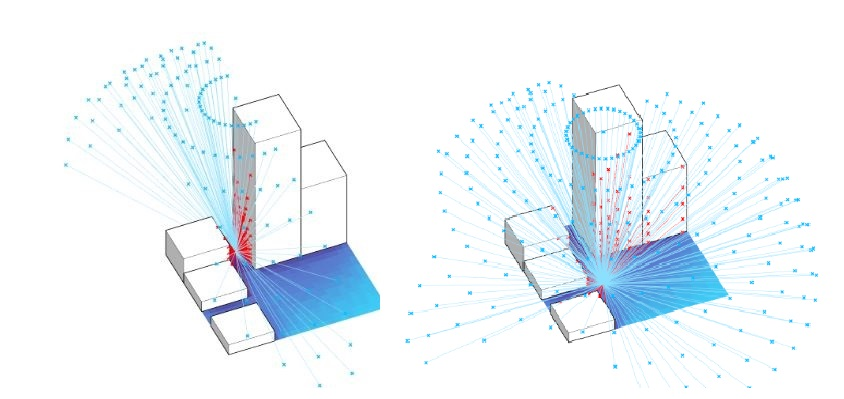
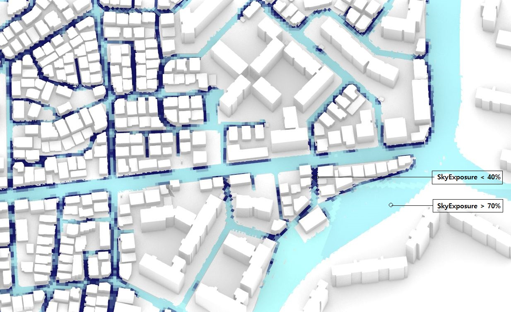
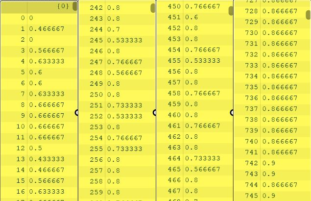
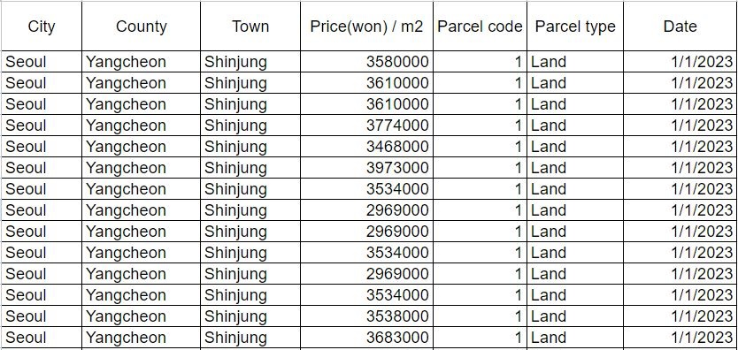
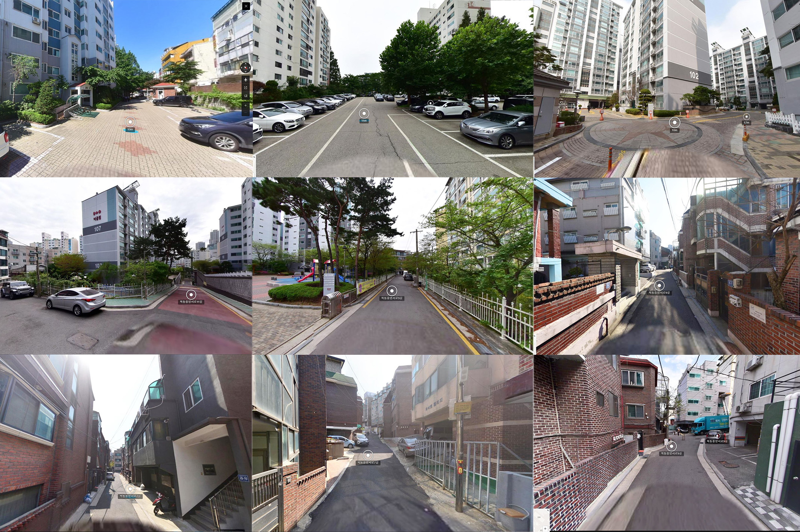

Klee
Table of Contents
1 – Systems
Workflows of Architects
Effective workflows of architects in school library renovation projects.
What do systems consist of?
Elements: Architect, Students, Teachers, Librarians, Builders, Design tools, Communication tools, Time, Budget
Interconnections: Design iterations based on the clients needs
students and teachers’ demands for the library → design presentation → clients’ feedback → revise design (flow of information)
Function or Purpose: The purpose of the systems can be elaborated in multiple ways. One, to spend more time on creative activity rather than laborious works.
Two, to improve the quality of design outcome by communicating design iterations with clients reflecting clients’ feedback more effectively.
Three, to make school library more aesthetically pleasing and functional for students and teachers to study and communicate each other’s ideas more dynamically.
Stocks: In this case, stocks are not physical entity but effectiveness in exchanging design information. Effective communication with clients and builders all adds up to better work-flows of architects.
What do systems consist of?
Feedback loops: There are both balancing and reinforcing feedback loops in the effective work-flows systems. Miscommunications with clients and builders
have negative effect on the systems' flow rate, however architects can learn from these trials and errors and develop their communication skill more quickly
therefore stabilizing the systems. Improvment in effectiveness of work-flows also leads to more projects and experience, which reinforce flow rate of the systems
Leverage points: There are several leverage points to cause changes in system behavior. One, more effective communication and presentation tools lead to more feedback from users which result in better design satisfaction from clients.
Two, streamlined workflows from design to rendering and documentation remove repetitive laborious tasks, which help architects focus more on creative activities.
Three, architect’s various mental models on the library increase effectiveness of work-flows such as 'What is the purpose of the library?', 'How to handle circulations in library projects?' and
'How to organize numerous volume of books?'. Equipped with diverse mental models of libraries, architects can greatly improve their work-flows.
Most problematic pain points
Usually the lack of budget and time is the most problematic pain points in proceeding architecture projects. It is hard to solve problems regarding budgets. So it is better to focus on other major problems that are relatively easy to solve such as High fidelity in schematic design phase. By proceeding SD phase with low fidelity and gradually increase fidelity as design phase progresses, architects can acheive effective work-flows.
2 – Authorship
Collective Authorship in Design
Strategies in authorship methods for effective workflows of architects
Authorship Philosophy Matters
Effective workflow of architects heavly rely on authorship methods of the atelier system. Ways to communicate and govern design principles follow authorship philosophy. So choosing the right authorship method is the key for successful architecture project. There are many stakeholders in architecture project such as clients, design team, head architect, builders, and government officials. Here I will focus on the three stakeholders (clients, designers, and a head architect) and talk about how authorship methods of the system affects design communication between them in the early design phase. The key to running architecture project successfully (in terms of workflow) is in how to govern Design Authorship (who has control in design principles in architecture projects) There are serveral Authorships Strategies that you can follow. Each authorship has pros and cons and appropriate one should be adopted based on the scale of the project and the design team.
Pain Points in Singular Design Authorship
While singular Authorship works well when the size of the atelier is very small, the design authorship throughout the design team is very unbalanced based on job titles. Under singular authorship it is hard to train all designers with the head architect's design principles. So desgin miscommunications between a design team and a head architect happen very often. Also such design miscommunications and unbalanced design authorship within the firm often leads to miscommunications with clients. Design communications between clients and a design team also takes a long process. First a design team has to present design options to the clients and wait for their feedback and usually those design feedback from clients are in verbal form. So lots of miscommunication happen when translating verbal language to visual langauge and vice verca. If there is a client-inclusive digital design tool where clients can quickly show their design feedback in visual language, the workflow of early design phase would be more effective.
.JPG)
Learning from Github: Collective Authorship
One of the fundamental key values of tech industry is a community-based collective authorship in open source, which is opposite to average architecture ateliers’ authorship structure. Github fork & pull request workflow is actualization of collective authorship in digital UI form. For example, d3 repository has been forked more than 23k times by 124 contributors although most of contributions come from a few people. Each member's contribution is clearly recorded in the server and anyone who wants to contribute can fork the existing repository and request for a merge to the main branch. If design ateliers can update their design principles to github like repositories not in the brain of a single architect, collabroation and communications between a design team and the head architect will be more effective.
Rhino 3D: Convenience that leads to more Authorship
There are laborious works that have less to do with authorship such as hatching patterns, erasing drawing repetitive stairs… etc. Rhino has great tools to finish these repetitive tasks a lot quicker than hand drafting. This kind of convenience enables architects spend more time on creative works. Also nurbs modeling in rhino makes it a lot easier to achieve curved surfaces. If someone wants their projects to have curved smooth surfaces as design language, using Nurbs modeling or SubD modeling in Rhino provides a convenient way to create and manipulate curves. In result, users can focus on the design and concept of their 3d model rather than putting efforts on making smooth curves.
'Lock in' geometries to lower the barriers to entry

Convenience that leads to less Authorship
Group Zines: Four systems where money and technology can be barriers

3 – Politics
$ Lender Money $
A spatial analysis with multiple forms of data.
Gather data 1. quotes from Quora
Focusing on the pain point (design micommunication between clients and designers), I tried to gather people's thoughts on it by searching on Quora with
the following keywords (design feedback / design communication) and analyzing the titles of people's questions on the issue. I found most of people who
asked questions are web designers and many of them asked about tools for effective communications
Q.'What is the best web-based application for gathering design feedback?'
Q.'Do you know if there is a great web design feedback tool?'
Q.'What are some good principles of providing design feedback?'
Q.'Can you give user/design feedback on this app?'
Q.'How do you ask a client to be more specific in their design feedback?'
Q.'How do you respond to design feedback from a client that doesn't make sense or contradicts itself?'
Q.'What is the user-designer communication gap?'
Q.'Is there any online platform where designers communicate with each other?'
Q.'What are the disadvantages of graphics communication?'
Q.'How do web designers communicate design ideas with their clients?'
Quora search with the keyworkd 'design feedback'
Gather data 2. Quick Draw! The Data
One of my pain points was translating verbal langauge to visual language in design communication. The image below is people's sketch on the word 'skyscraper'. I wanted to see how people convey different visual forms given the same keyword. The image on the right shows how design can go terribly wrong in its implementation process without design feedbacks on a regular basis.
Gather data 3. Local Architecture Firms from google maps
Gather data 4. Architecture Projects of Local Architecture Firms
System Change
Urban disparity in Seoul residential areas where money is a barrier to natural amenities.
Human vision angle
Sky exposure analysis
Gather data 1. Seoul sky exposure analysis on 3D model
Sky exposure percent metrics
Gather data 2. Seoul real estate price per squared meter
Gather data 3. Street view images
Villas and Apartments
There are two typical residential building types in Seoul. Villas are generally older and have three to four floors. Most of villas were built with no clear urban planning in the past, so usually roads between villas are very narrow with no sidewalks for pedestrians. The street is full of cars parking beside a building and there is no safe paths to walk for residents. With a lack of public parks in Seoul residents in villas have very limited access to natural amenities, whereas newer apartments have gardens and playgrounds in their private parks. The korean government has neglected to provide public amenities for villas and as a result the residential disparity in Seoul has been deepened. Most of the time, natural amenities such as river, parks and sky view are only for residents in high-rise apartments with underground parking lots. Next, we will see a user journey of residents in the two different residential types through maps, street views and statistics.
User Journey: Seoul Residents in Villas

User Journey: Seoul Residents in Apartments